WELCOME TO SINGAPORE ZOO
A lush tropical rainforest filled with fun and discoveries!
Get ready for a wild adventure with over 2800 animals!
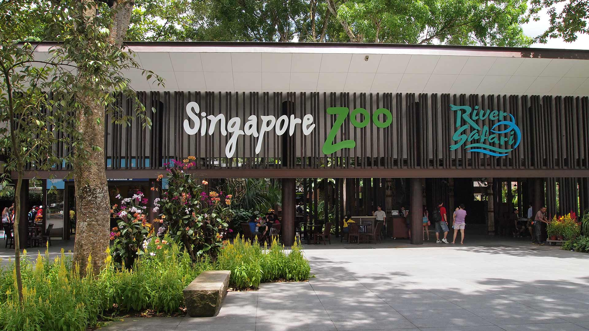
ABOUT US
Located on the north-western side of the island, the Singapore Zoo is a haven for wondrous wildlife and a must-visit for animal lovers.
This beloved establishment first opened its gates to the public in 1973, and has since become one of the best rainforest zoos in the world.
Besides being home to over 2,800 animals from 300 species—including crocodiles, Malayan tapirs and white tigers — the zoo has won a trove of international and local awards.
Take a walk on the wild side with us and discover what the Singapore Zoo has to offer!
SINGAPORE ZOO MAP
Explore the zoo with ease with a click of a button!
Click on the areas boxed in red to learn more about the different animal zones!
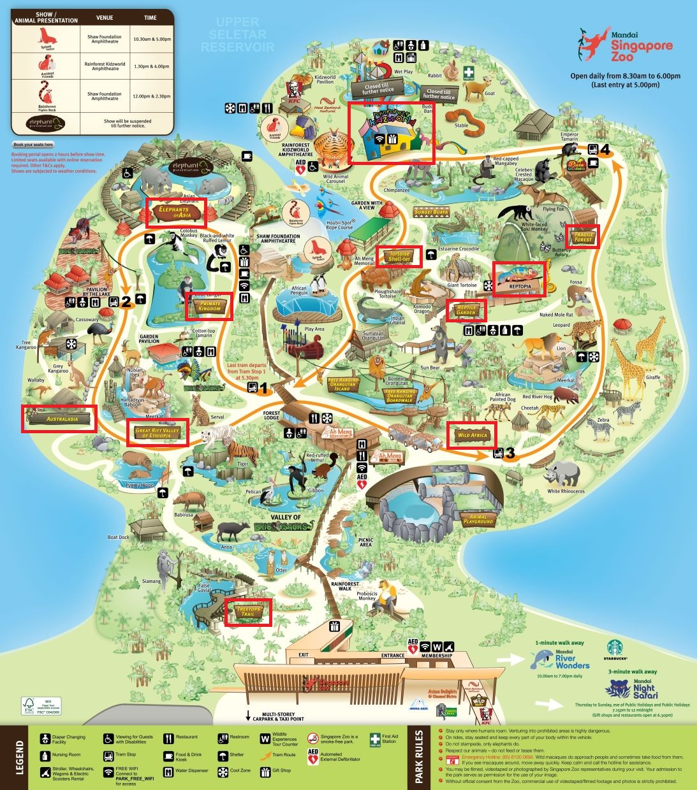
Select a park map in your preferred language to download.
ENGLISH
CHINESE
ANIMAL ZONES
There are 11 different animal zones in the zoo, filled with different wildlife!
Click on the different zones to fine out more about the animals there!
ANIMAL SHOWS
Guests are required to book show seats online in advance.
Booking portal
opens 2 hours before show time.
All shows are weather permitting and show seats are subjected to available capacity as part of prevailing Safe Management Measures.
| Show |
Location |
First Show |
Second Show |
| Splash Safari |
Shaw Foundation Amphitheatre |
10.30am |
5.00pm |
| Animal Friends |
Rainforest Kidzworld Amphitheatre |
1.30pm |
4.00pm |
| Rainforest Fights Back |
Shaw Foundation Amphitheatre |
12.00pm |
2.30pm |
| Elephant Presentation |
Elephants of Asia |
Temporarily Suspended |
Temporarily Suspended |
Good To Know
- The Splash Safari Show has designated splash zones. Occupy these seats only if you do not mind some wet and wild fun.
- Kindly refrain from using flash photography during shows as it may distract the animals.
- The Zoo usually have photography sessions at the end of the show. So, be sure to stick around for a snap with the animals!
- There are designated wheelchair zones at the Shaw Foundation Amphitheatre and Elephants of Asia exhibits that can accommodate up to 6 and 15 wheelchairs respectively. So, even those with limited mobility will have a chance to catch the shows!
DINING
Please note that unvaccinated guests will not be able to eat at the various food outlest but will be able to purchase food for takeaway.
Food at the Zoo Entrance
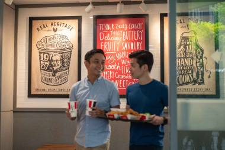
KFC (Entrance)
Mon-Fri:
10.00am - 6.00pm
Sat,Sun,PH:
9.00am - 7.00pm
Everyone loves Colonel Sanders’ secret herbs and spices crispy chicken! Complement your finger-lickin’ good treat with the signature KFC whipped potato or other delectable choices!
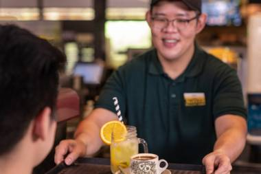
Inuka Café
Mon-Sun,PH:
8.00am - 6.00pm
You can’t go wrong with Singapore’s all-time favourite dishes. Indulge in some hearty kaya toast, soft-boiled eggs and chendol – perfect for any time of the day!
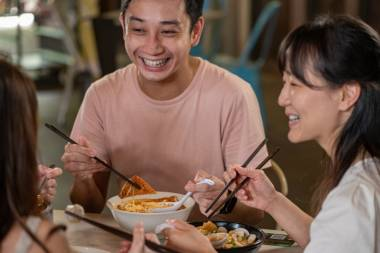
Chomel Bistro
Mon-Sun,PH:
10.30am - 6.00pm
Fancy something local? Chomel Bistro serves up a range of authentic Singaporean favourites such as nasi lemak, fried bee hoon and laksa.
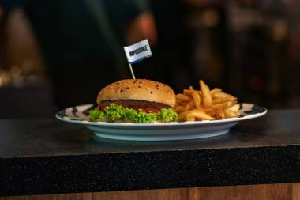
Chawang Bistro
Sat,Sun,PH:
10.30am - 6.00pm
Tantalise your taste buds with Chawang Bistro’s selection of house specials, Impossible meals and pasta.
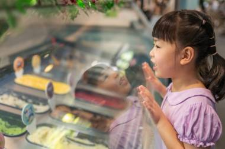
New Zealand Natural
Mon-Sun,PH:
10.00am - 6.00pm
Satisfy your ice cream craving with our wide range of ice cream flavours that ranges from Chocolate Ecstasy, Macadamia Supreme to Boysenberry Dream.
Dining in the Zoo
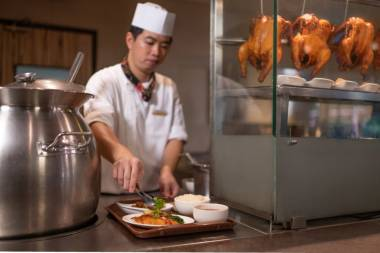
Ah Meng Restaurant
Mon-Fri:
10.30am - 4.00pm
Sat,Sun,PH:
10.00am - 4.30pm
With a casual atmosphere and a variety of food to choose from, Ah Meng Restaurant is the perfect food stop. Enjoy local and western delights such as chicken rice, BBQ Half Spring Chicken, briyani and more!
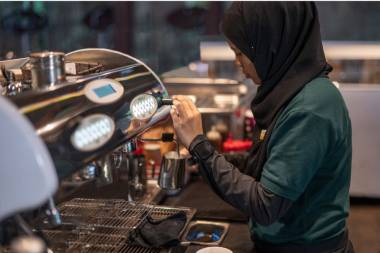
Ah Meng Bistro
Mon-Fri:
9.00am - 4.00pm
Sat,Sun,PH:
10.30am - 5.30pm
Aside from its fine selection of gourmet sandwiches, pastries and desserts, Ah Meng Bistro brews a health specialty tea, which promotes overall wellness. Come in for a light treat!
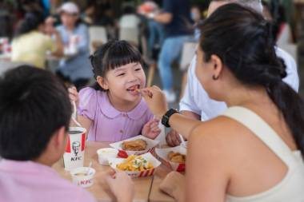
KFC (Rainforest Kidzworld)
Mon-Fri:
10.30am - 5.30pm
Sat,Sun,PH:
10.00am - 6.00pm
Everyone loves KFC’s fried chicken, which is why we have two outlets at the park –– one at the entrance, and one within the zoo.
Bring your own food
- There are both open and sheltered areas at Pavillion By The Lake that can be used for picnics. You can purchase food for takeaway from food outlets or bring your own, and have it there while enjoying the lovely view.
- As food outlets can be quite far from certain attractions, you can bring some snacks to eat as you tour the park. Remember to bring water bottles so you can stay hydrated!
- Beware of macaques! Wild monkeys in the park associate baby prams and plastic bags with food. If you encounter them, please keep all food out of sight as they may approach you in search of food.
TICKETS
Operating hours
(open every day) |
8.30am - 6.00pm
(Last entry at 5.00pm) |
| Adult |
Child |
Senior |
| Starting from $39.60 |
Starting from $27.90 |
Starting from $18
|
Local residents with a valid WildPass get to enjoy 50% off admission to Singapore Zoo with promo code "MARCHHOL50"! Promotion is valid from 9-13 March 2022.
Click here to get
tickets
and
WildPass
now!
GETTING HERE
Making your way to Singapore Zoo is easy. No matter where you’re starting your journey from, there are several quick and convenient ways to get here.
| Address |
| 80 Mandai Lake Road Singapore 729826 |
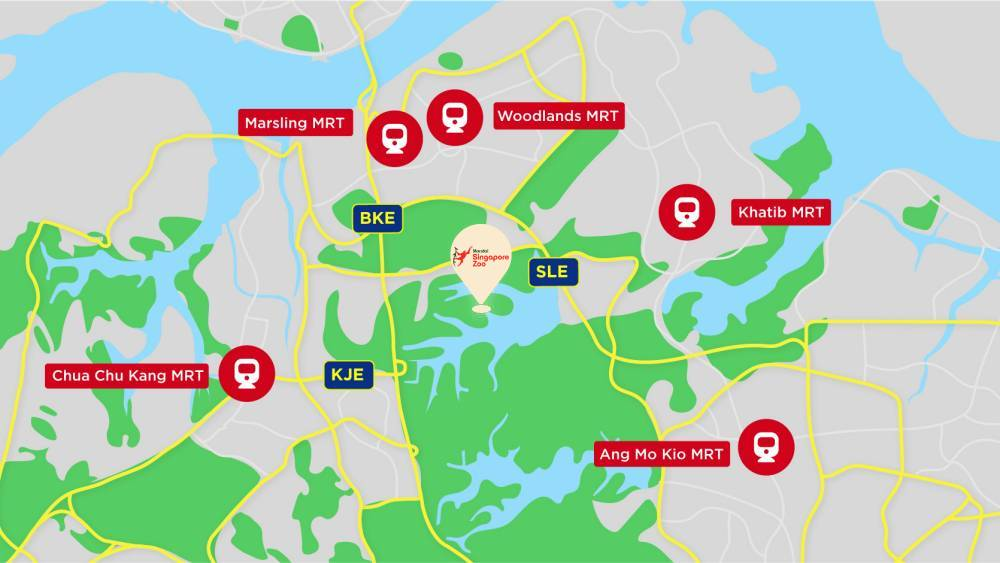
- If you’re taking the North-South MRT line, you can take the train to Khatib, Choa Chu Kang, or Ang Mo Kio. From there, you can hop on a connecting bus that will take you straight to Singapore Zoo.
- If you're coming from the heartlands, Mandai Express is a convenient, affordable way to get to and from Mandai Wildlife Reserve.
- If you're driving, the Singapore Zoo is about a 30-minute drive from the city. You can choose from two different routes to get here, and there is multi-story carpark for parking.
- If you’re coming by taxi, there is a sheltered drop-off inside the multi-story carpark.
You can use
Google Maps
to plan your trip!
For more information on transportation on parking rates and Mandai Express operations click
here.